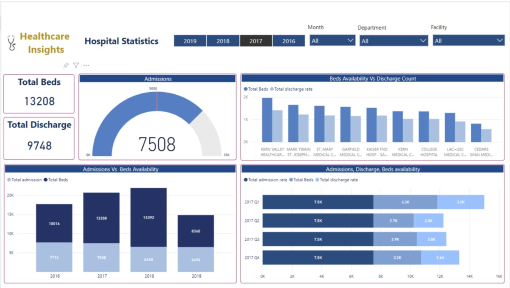
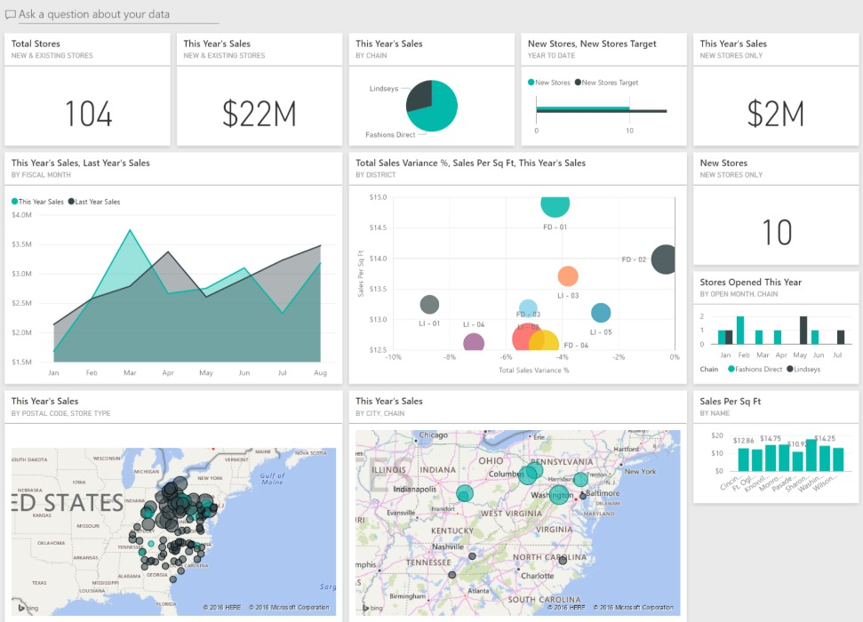
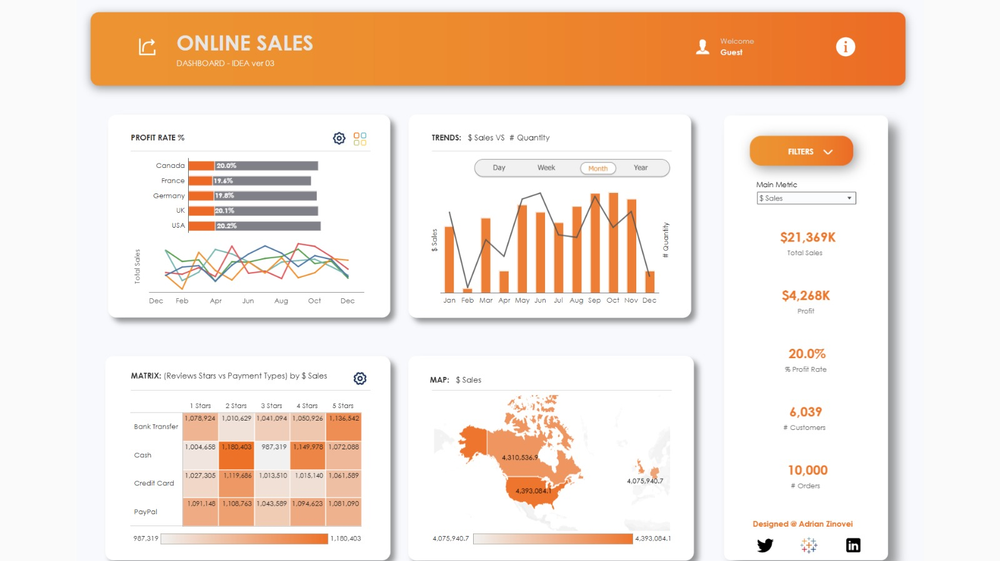
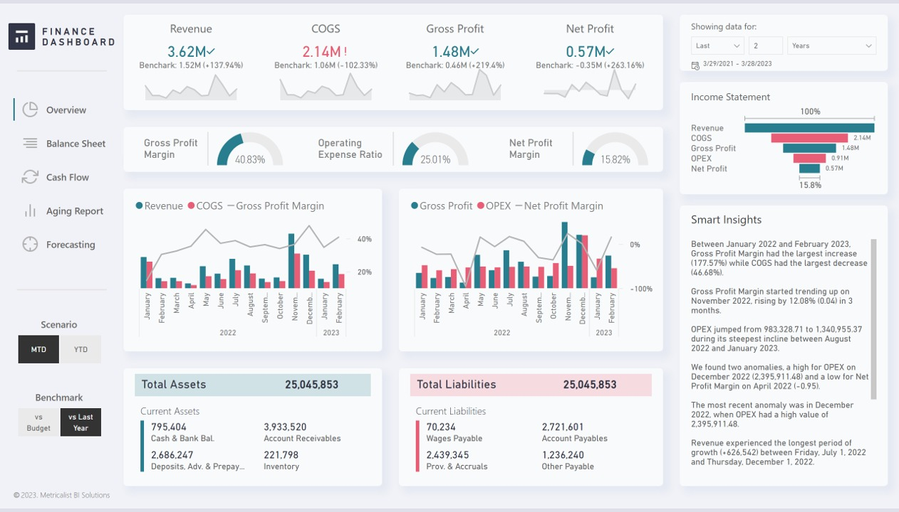
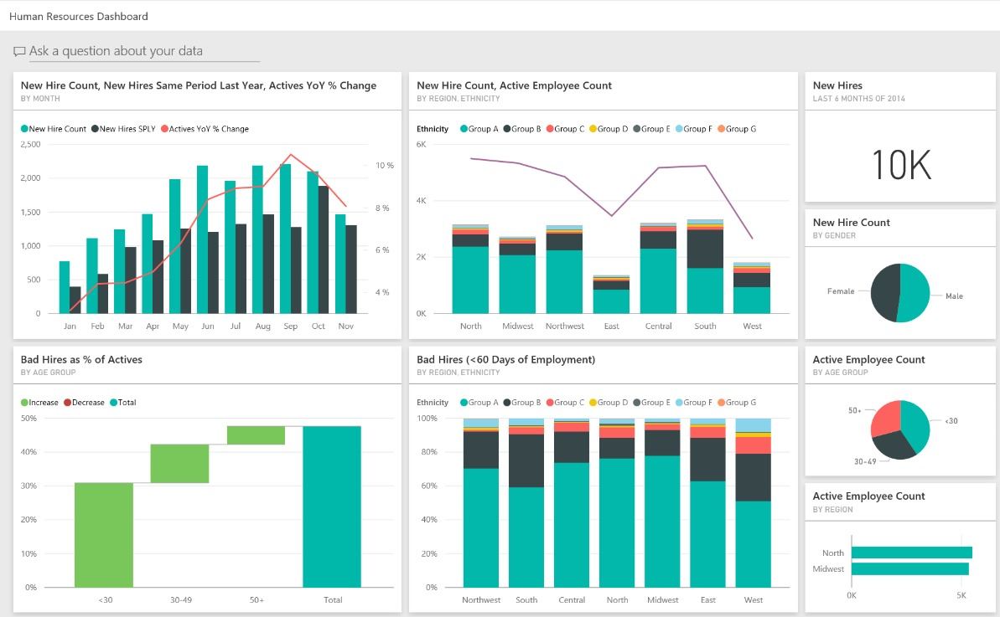
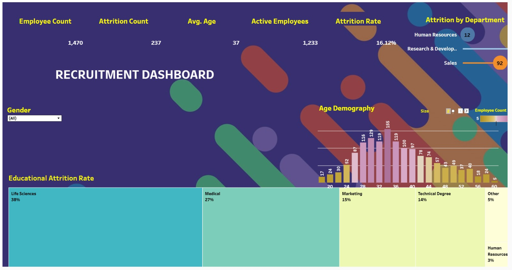
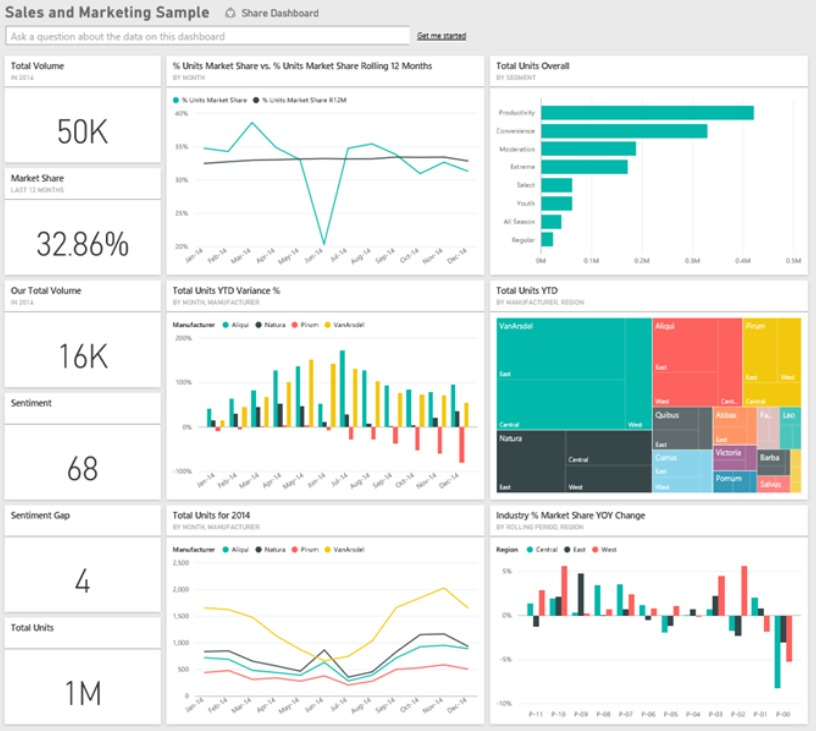
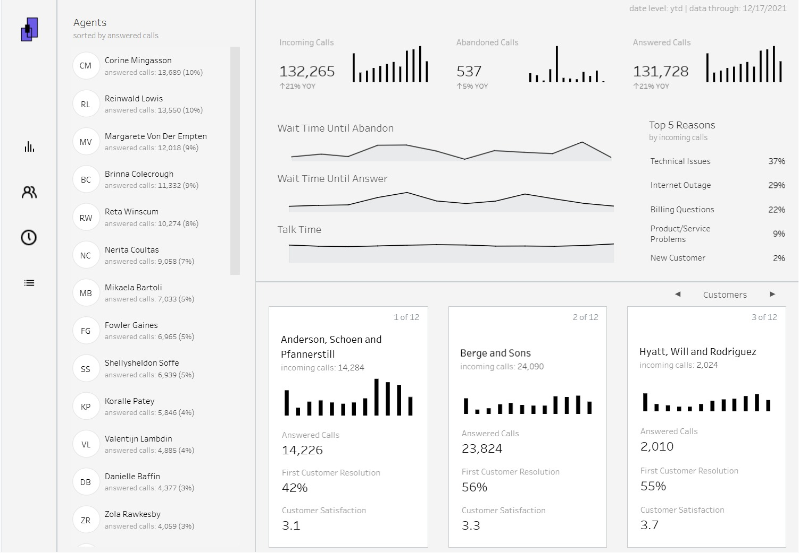
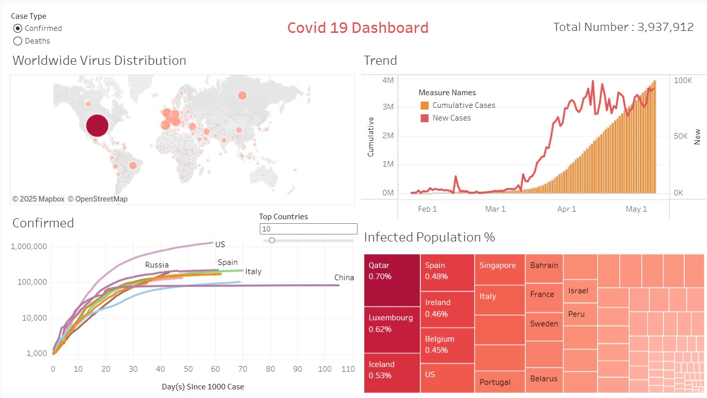

I am Shayan D Salman
Name: Shayan D Salman
Profile: Data Analyst / Business Intelligence
Email: salman.d.shayan@gmail.com
Phone: +1 571-315-8255
Location: Fairfax, VA
Resume: View Full Resume (PDF)
Core Skills
Professional Summary
Data Analyst with 4+ years of professional experience in data analysis, SQL, Power BI, Tableau, Excel, business intelligence, and reporting. Skilled in analyzing operational and business datasets, developing interactive dashboards, KPI reports, and data visualizations, identifying trends and performance gaps, and translating complex data into actionable business insights. Experienced in data cleaning, data validation, ETL, SQL querying, data transformation, data modeling, and dashboard development. Strong foundation in Management Information Systems and business analytics, with proven ability to improve reporting workflows, identify operational inefficiencies, and support data-driven decision-making through accurate, insightful, and business-focused analysis.
Resume
My education, certifications, and professional experience in data analysis, business intelligence, and reporting.
Education
Bachelor of Science in Business — Management Information Systems
George Mason University — Fairfax, VA
August 2021 – Expected Spring 2026
Certifications
Microsoft Power BI Data Analyst Associate
Microsoft, 2024
SQL for Data Science
University of Michigan, 2024
Data Visualization with Tableau
University of California, Davis, 2024
Business Analytics Fundamentals
Certification
Agile & Scrum Fundamentals
Certification
Introduction to Artificial Intelligence
Certification
Technical Skills
- Data Analytics & Business Intelligence: Data Analysis, Business Intelligence, Data Cleaning, Data Validation, Data Transformation, ETL, Exploratory Data Analysis, Trend Analysis, KPI Analysis, Variance Analysis, Data-Driven Decision Making
- Power BI: Power BI Desktop, Power Query, DAX, Data Modeling, Data Transformation, Calculated Measures, KPI Dashboards, Interactive Reports, Data Visualization, Filters, Slicers, Drill-Down Analysis
- SQL & Database Analytics: SQL, Complex Queries, Joins, CTEs, Aggregations, GROUP BY, Subqueries, Filtering, Data Extraction, Data Manipulation, Database Analysis
- Tableau & Data Visualization: Tableau, Interactive Dashboards, Data Visualization, Calculated Fields, Filters, KPI Reporting, Performance Dashboards, Analytical Reporting
- Microsoft Excel: Pivot Tables, XLOOKUP, VLOOKUP, Advanced Formulas, Data Cleaning, Data Validation, Data Analysis, Reporting, Dashboard Development
- Business & Operational Analytics: KPI Tracking, Inventory Analytics, Performance Analysis, Market Research, Operational Reporting, Process Improvement, Business Requirements Analysis, Competitive Analysis
- Professional Skills: Analytical Thinking, Critical Thinking, Problem Solving, Communication, Cross-Functional Collaboration, Time Management, Project Delivery, Attention to Detail
Professional Experience
Inventory Data Analyst
June 2022 – February 2024
Amazon Fresh — Lorton, VA
- Developed Power BI dashboards and reports to analyze inventory levels, SKU performance, replenishment activity, and operational KPIs.
- Used Power Query and DAX to clean, transform, model, and analyze inventory datasets for accurate reporting.
- Performed data validation, reconciliation, and variance analysis across 50+ units to identify discrepancies and improve data integrity.
- Analyzed overstock, duplicate shipments, and replenishment data to identify operational inefficiencies and inventory optimization opportunities.
- Created KPI-driven Power BI visualizations to track inventory movement, trends, and performance metrics for operational decision-making.
- Collaborated with cross-functional teams to improve data accuracy, reporting workflows, dashboard visibility, and operational efficiency.
Tools: Microsoft Power BI, Power Query, DAX, SQL, Excel, Data Analysis, KPI Reporting
Junior Data Analyst – Business & Market Research
Fall 2021 – Present
OLINEGROUP — Lorton, VA
- Developed Tableau dashboards and reports to analyze market trends, competitive intelligence, business requirements, and performance metrics.
- Supported the migration of Tableau reporting to Microsoft Power BI, translating existing dashboards, KPIs, calculations, and reporting requirements.
- Rebuilt Tableau dashboards in Power BI, enhancing interactive visualization, filtering, reporting, and management visibility.
- Performed data cleaning, validation, transformation, and reconciliation to ensure accuracy and consistency throughout the BI migration.
- Used SQL and Excel to extract, analyze, and prepare business and market datasets for Power BI reporting.
- Delivered standardized Power BI dashboards and analytical reports providing actionable insights for proposals, strategic initiatives, and business decisions.
Tools: Tableau, Microsoft Power BI, Power Query, DAX, SQL, Excel, Data Visualization
Project Highlights
Portfolio Dashboards
- Healthcare Analytics Dashboard | Power BI – Patient admissions, department performance, diagnosis, insurance revenue, billing, length of stay, and patient satisfaction.
- Finance Analytics Dashboard | Power BI – Transaction amount, profit/loss, fees, financial products, customer segments, and regional performance.
- HR Analytics Dashboard | Power BI – Employee headcount, salary, performance, attrition, employment type, and hiring trends.
- Sales Analytics Dashboard | Power BI – Sales, profit, discount, quantity, products, customer segments, and regional performance.
Recent Projects
Aviation analytics and data visualization projects









Contact
Get in touch for data analytics, business intelligence, reporting, or collaboration opportunities.
Location
Fairfax, VA
Call Me
+1 571-315-8255
Email Me
salman.d.shayan@gmail.com